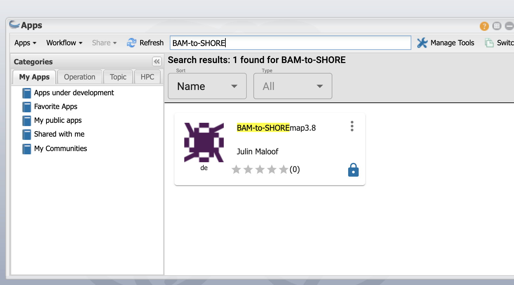
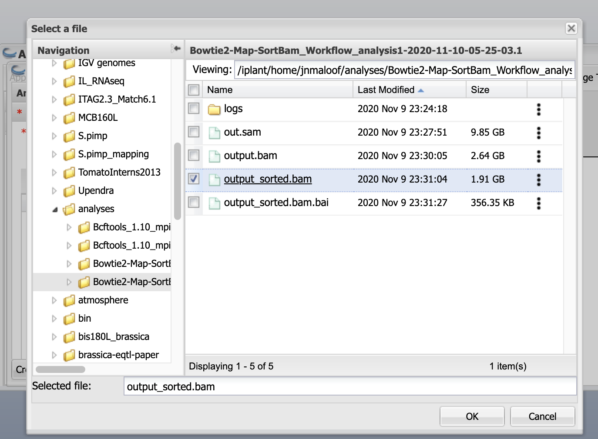
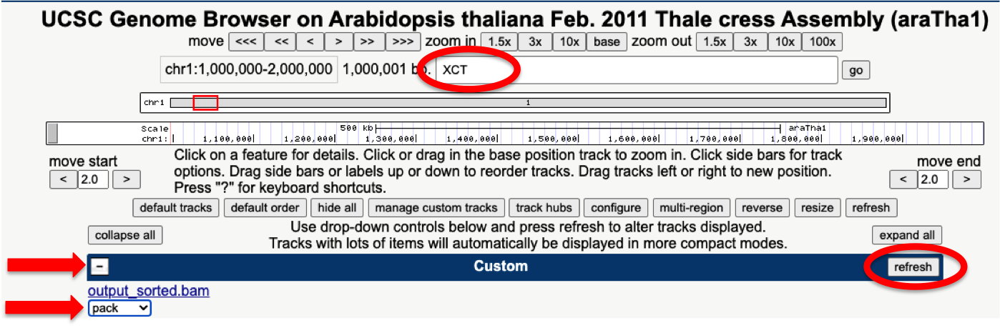
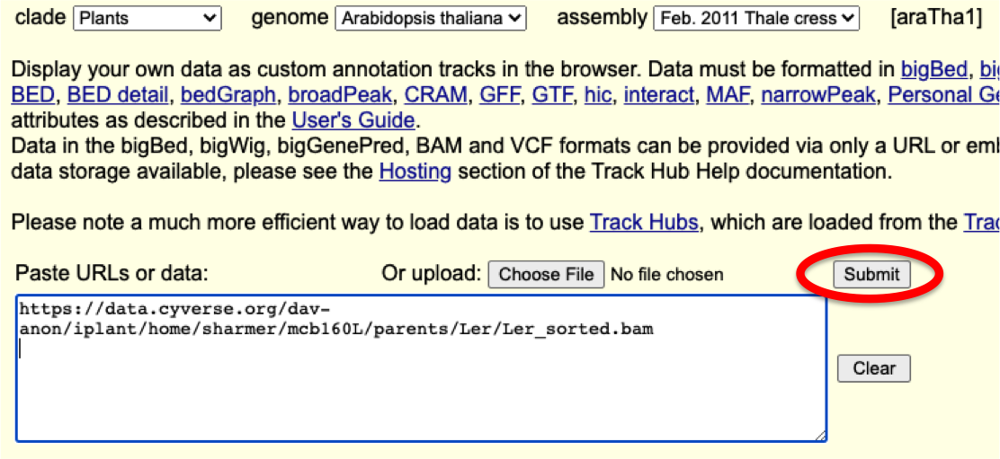

Mapping mutants by Bulk Segregant Analysis and Illumina Sequencing
Day 2: Find SNPs and View Reads in a Genome Browser
Intro
In today's lab, you'll do the following:
- manipulate the file that you generated in the last lab (the BAM file, with the reads from your mutant aligned to the Col reference genome) so it can be used by the SHOREmap mapping software the next time we meet
- Use the UC Santa Cruz Genome Browser to:
a. determine how well the reads from your mutant (EMSXX) are aligned to the reference genome using the UC Santa Cruz Genome Browser.
b. inspect sequence differences between the reference genome (Col) and the genome of a different strain of Arabidopsis (Ler)
Call Single Nucleotide Polymorphisms (SNPs)
Last time, we aligned the reads obtained from sequencing our F2 mutant plants to the reference Arabidopsis genome (the strain Columbia, or Col) to generate a BAM file. Today, we will find those positions where the reads from our F2s differ from the reference genome, and where they match. We will use the tools bcftools mpileup and call and SHOREmap convert.
-
bcftools mpileupcounts up all the reads at each position in the genome and tallies how many match the reference and how many are different. -
bcftools callthen takes this information and computes statistics to determine the likelihood of true variation (as opposed to sequencing error) at each location. These programs produce avcffile, a common format for genomic SNP information. -
SHOREmap convert, as its name suggests, will convert the vcf file to a format that can be understood by our mapping program, SHOREmap.
We have combined the bcftools mpileup, call, and SHOREmap convert into a single app that will run these steps together. (In the command line, you would need to invoke each program one at a time.)
Click on the Apps button and search for "BAM-to-SHORE".

Next click on the three buttons to the right of the BAM-to-SHOREmap application and then select Quick Launch.

Finally, select MCB160L from the quick launch menu and click on the arrowhead.

You can leave the first part (Analysis name and output folder as default)

BCFtools 1.10 mpileup - Input data
Click on BCFtools 1.10 mpileup - Input data
Here you want to use the BAM file that you created by running Bowtiew in the previous session.
Click the "add" button, navigate to your analyses folder, click on the Bowtie2-Map-SortBam... folder and then select the output_sorted.bam file and click OK

Once you have it selected the window should look like this:

Launch it
The remaining settings can be left at their default values.
Time to launch! Click Launch Analysis
As before, click on the Analyses button and click refresh a few times to make sure it is running didn't fail in the first few minutes.
This will take 1-2 hours to run (closer to 2 hours for most data sets); we'll work with the output in our next lab
Inspect the settings
Now that your analysis is running, let's look more closely at what we just did.
Again, click on the three buttons to the right of the BAM-to-SHOREmap application and then select Quick Launch.
Then, select MCB160L from the quick launch menu and click on the arrowhead.
Please look at the settings in the indicated tabs to answer the below questions.
Please answer the below questions in today's worksheet.
- Click on the
bcftools mpileup - Output optionstab. What is the selected output type? And from what you learned in today’s lecture, what do you think are the two most important types of information contained in this file? - Click on the
bcftools call - Consensus/variant calling optionstab. What is the default ‘variant calling method’? And what is the other possible method - What do you think these two options might mean? And why do you think it is important that we used the default method here? (Keep in mind that the Illumina library that you are analyzing was generated from pooled genomic DNA extracted from ~200 different plants.)
- Click on the
SHOREmap convert - Parameterstab. Find the ‘minimum AF’ that has been specified for you and write it down below. (AF stands for ‘Allele Frequency’.) How do you think this relates to the ‘variant calling method’ specified inbcftools calland what do you think this parameter does?
Inspect your aligned reads using the UC Santa Cruz Genome Browser
Next, you will examine how well the sequencing reads from your mutant F2 plants were aligned to the Arabidopsis reference genome. (Recall that the strain called Col was sequenced to generate this reference sequence.)
We have discussed the many ways in which errors can be generated in Illumina sequencing reads. Since we're using Illumina data to map a mutant, it is important for us to be able to distinguish 'real' polymporphisms present in our starting pooled genomic DNA sample from errors generated during the sequencing process.
The algorithms that we're working with examine both read quality (e.g. PHRED scores, as discussed last time) and the number of times a specific polymporphism is detected in our library to help distinguish real polymorphisms from random errors.
We'll get a sense for how this works by loading the BAM file you generated in our last lab in the UC Santa Cruz Genome Browser and looking at the aligned reads.
- First, go to the Discovery Environment and obtain a URL that links to your BAM file. Navigate to your
analysesfolder, click on theBowtie2-Map-SortBam...folder and then select theoutput_sorted.bamfile.
Select the 'Share' pulldown menu and select the 'View in Genome Browser' option.

You'll then get a pop-up window with a URL. Paste this address into your worksheet (this is question 5) and save it; you'll need it below (and you'll also need it again next week).
- Next, navigate to the UC Santa Cruz Genome Browser to set up the display settings and load your custom data. Cick on
Genome Browserunder tools.
Type 'araTha1' into the search window; select the 'araTha1' listed under the Assembly Hub: Plants line. Be sure you select this one even though other lines have the same name!
The "Feb 2011 Thale cress" annotation should autopopulate in the 'Plants Hub Assembly' bar. Be sure that this is the name diplayed before you click 'Go'!

Warning - the browser window will look very confusing at first! We will simplify the view.
Click the 'hide all' button just below the white window.
Ah, that's better! Now we'll add a custom track that includes the sequences from your mutant aligned to the reference genome.
Click on the 'add custom tracks' button
And paste in the URL you obtained from the DE in the top box in the next window. Click 'submit'.
You should be taken to a page that looks like the below image. Click on 'go'.
- Examine your aligned reads. To see them, click on the 'plus' symbol on the left side of the blue bar labeled 'Custom'. Choose the 'pack' display option under the display options pull-down menu.
Write in the locus name XCT in the search bar near the top of display, just to restrict your view to a small part of the genome.
Then click the 'refresh' button on the rights side of the blue 'Custom' bar.

Navigate within the Genome Browser to answer the below questions on your worksheet. Remember to use the navigation controls at the top of the page zoom in and out, and to move your field of view to the left and the right.
More worksheet questions
- What do you think the vertical red line at the top of the page represents? (Hint: try entering new position coordinates in the search bar at the top of the page.)
- What do the brown rectangles separated by horizontal lines at the bottom of the plot represent? Why are there small arrowheads on these horizontal lines?
- Note the skinny brown rectangles at the farthest left and right portions of each gene model. What do these represent? (Their positions should give you a big hint.)
- The brown and blue boxes in the middle of the plot represent individual sequencing reads from your library. Click on a few to see the corresponding portion of the BAM file for each read. Why are some reads indicated in blue and some in brown?
Go back to your browswer view. Zoom in to the base level (see 'base' button just to the left of 'zoom out' in the navigation area). Find a sequence read (either a brown or a blue rectangle) that has white nucleotide displayed within it. Click on this read. (You may have to scan to left or right to find one.)
- Look at the BAM entry for this sequence read. Identify the polymorphic base and write in its sequence and that of the 3 bases on either side on your worksheet (do this for both your sequence read and the reference). Circle or highlight the mismatched bases.
- Find the quality score for this base in your sequencing read and write it in below. Using the formula from last lab, calculate the probability that this base call is not correct. Based on this value, do you believe this is a true polymorphism?
- Does anything else in your genome browser view suggest whether or not this represents a true polymorphism between your pooled F2 genomic DNA and the reference genome? Explain.
Examine polymorphisms between Ler and Columbia
Recall that you'll be mapping your mutation using markers (SNPs) that are different between the Col and Ler strains of Arabidopsis. We can use the Genome Browser to see just how common such polymorphisms are.
You will generate a new custom track in the UC Santa Cruz Genome Browser to view Ler reads generated in a separate experiment. On your Genome Browser page, click the 'manage custom tracks' button.
Now, click on the 'add custom tracks' buttons in the next window.
And then paste this URL
https://data.cyverse.org/dav-anon/iplant/home/sharmer/mcb160L/parents/Ler/Ler_sorted.bam
into the to entry box. It should look like the below image. Hit 'submit'.

Now on the next page click 'go' to return to the Genome Browser.
Change the settings under the blue bar labeled 'Custom' (as you did previously). Hide your F2 BAM file and set the Ler BAM file to display as 'pack'. Click 'refresh'.
Type in the gene name ELF4 in the top search bar and click 'go'.
Choose the top link (AT2G40080.1) on the next page.
Using the zoom and scan controls, find a position within the ELF4 coding region where you think there may be a true sequence polymorphism (SNP) between Ler and Col.
- Click on a read to see the alignment between Col and Ler around your putative SNP. Write out the sequence of the candidate SNP and that of the 3 bases on either side (do this for both your sequence read and the reference). Circle or highlight the mismatched bases. Explain why you think this may be a true polymorphism (SNP) rather than a sequencing error.
Zoom out with the 10x button. Scan left and right and examine the frequency of continuous vertical red lines; these are positions where the sequences of most/all reads fail to match the reference genome.
- What do you conclude about the frequency of SNPs between Col and Ler?
In our next lab, you will identify genomic regions and candidate genes that may be responsible for the miRNA phenotype in your mutant plants.